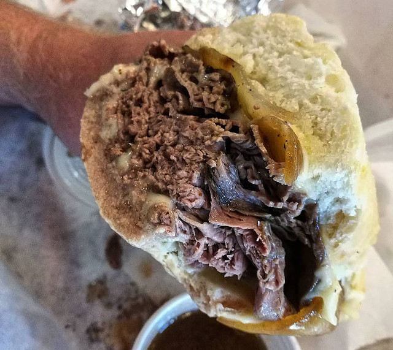
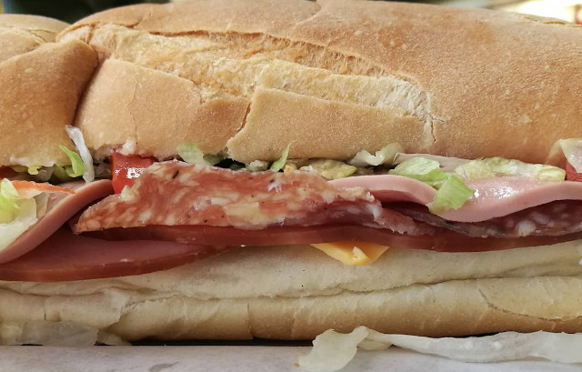
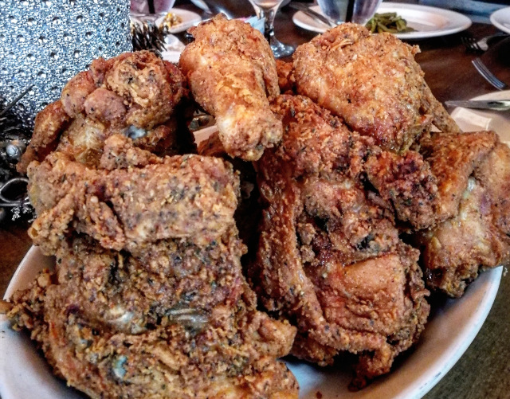
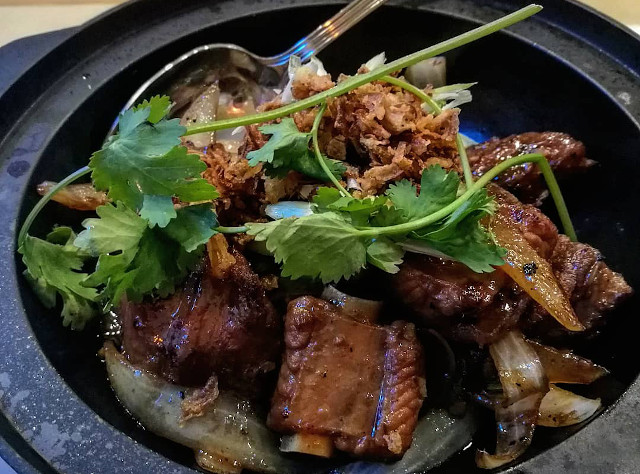
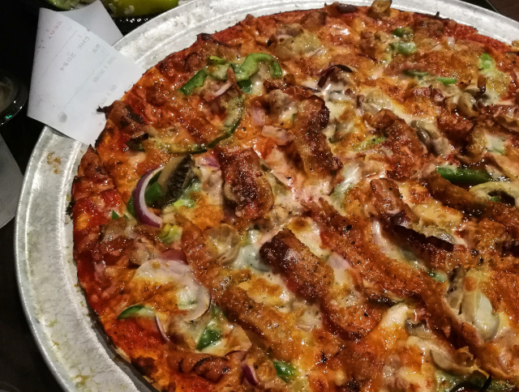
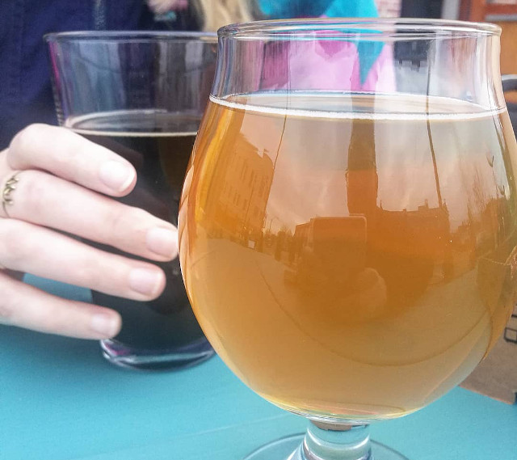

St. Louis is gaining recognition as on of America's greatest food cities. Here's our guide to eating your way around some of the city's best spots in a single weekend.
Blues City Deli
This was one of the first places in St. Louis I ever went to. We went on a Saturday afternoon, when they have a band playing blues and R&B, crammed into a small space by the window. The place was crammed, people spilling out of the door, every seat taken. I love their sandwiches - huge - and gumbo, and Vinny the owner is a great guy. The band was excellent too, but the atmosphere, the whole scene, was just really special. I hadn’t experienced anything really like it, and it reminded me a little of New Orleans. That first time I visited Blues City Deli I thought “wow, St. Louis actually has really cool places like this? Maybe I could live here.”
Here's what Sauce had to say about Blues City Deli:
"The sandwich board is unparalleled in town, offering everything from barbecue to New York-style pastrami to po’boys stacked high and ready to be devoured."
Gioia’s Deli
Simple place, but the Italian deli sandwiches are some of the best in the city. Perhaps that’s why they’ve been in business on The Hill for over a century. They’re also huge, and good for sharing between two. The hot salami is the signature, but they have a ton of options, and whatever sandwich you choose, the bread is outstanding. Expect a long line during lunch hours and on weekends.
Gallaghers
This Waterloo, IL, spot might be the best deal you can reach in under an hour’s drive from downtown. It’s an unpretentious place and the food is pretty special. A beautiful old-style pub with a dining room upstairs. All-you-can-eat chicken, tender and coated in a crisp, richly seasoned breading, served with green beans, biscuits ’n’ gravy, corn custard and dessert. You get all of this for $12.95¢ – a bargain.
Szechuan Cuisine
This Olive restaurant serves some of the most authentic Chinese food there is to be had in St. Louis. The menu offers a range of cold dishes, dishes for sharing, vegetables, meat and seafood. Not everything on the menu is from Sichuan province, famous for its spicy cuisine and numbing, ma la huajiao peppers, but a lot of it is. Try the shui zhu yu, boiled catfish served in a very spicy ma la broth, or the lazi ji, chicken with hot peppers.
Blackthorn Pub
"The best deep dish you’ll find this side of the Mississippi," says owner Billy Brown. This Tower Grove South pub also offers thin crust pizza, but the deep dish is the standout. Allow around 45 minutes for them to make the deep dish though, or call ahead so they can get your order started. A small deep dish is enough for two – it’s very heavy on cheese and crust, so no matter what your eyes tell you, expect to be full after just two or three slices. They also have a good selection of draft beers.
Civil Life
There are other craft breweries that are better-known, but Civil Life is one of the standard-bearers for the city’s brewing scene. It’s specialty is British and German styles, lightly hopped and relying on traditional flavors rather than outlandish combinations of ingredients. The staff are friendly, the bar menu is great and the whole place has an old-timey atmosphere that lends it so much of its charm.
